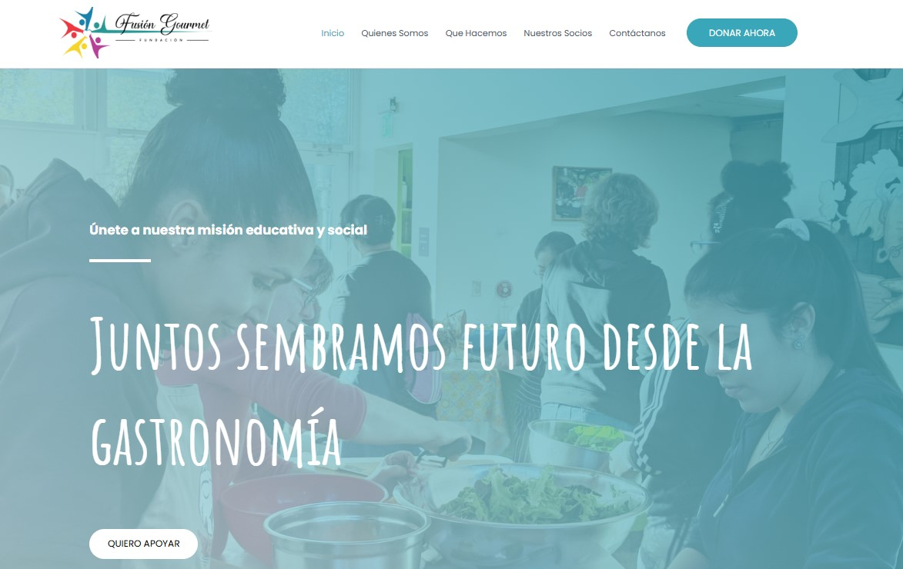

EXHIBIT 001
Páginas web con identidad
Diseño y estructura de páginas web desarrolladas con HTML y CSS, pensadas para tener personalidad visual, navegación clara y una estética que no se sienta genérica.
Consultar proyecto